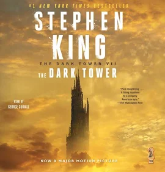

The Dark Tower: An Absolute Beast of a Series

This series is an absolute beast — dark fantasy, western, and horror all mashed together, which isn't my usual territory, but damn if it didn't stick with me anyway.
Roland, and a quest bigger than life
Roland the gunslinger is on a quest that feels bigger than life itself. The atmosphere is haunting as hell and the scope is massive. This is the kind of series that gets under your skin and just stays there.
[Heads up] Nothing about this is a quick listen. It's a long, weird, sprawling commitment — but if the genre blend sounds appealing at all, it's worth the hours.
8/10. Way outside the progression fantasy lane and still one of the most memorable things I've listened to.